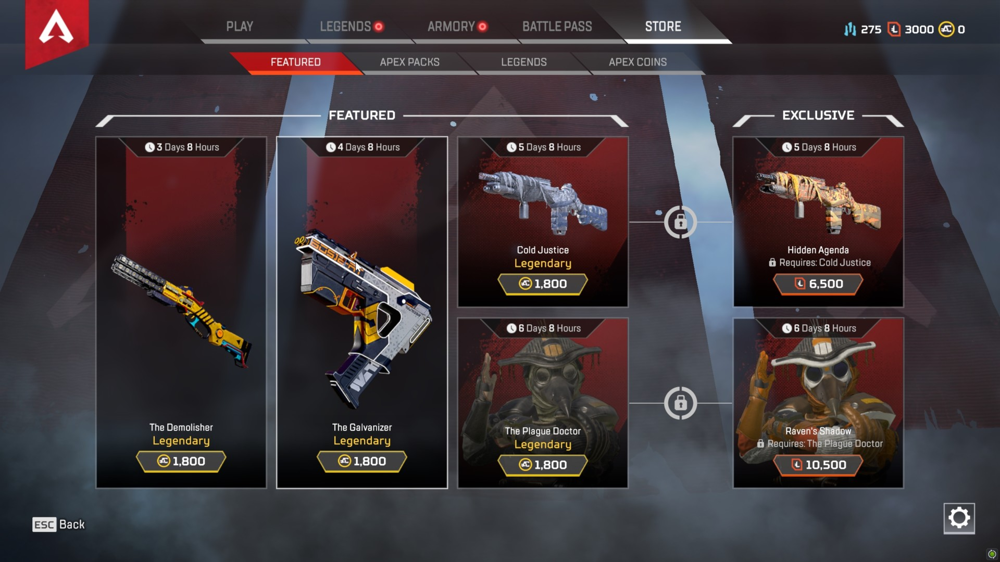
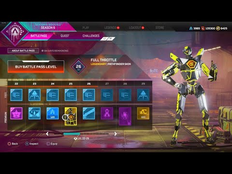
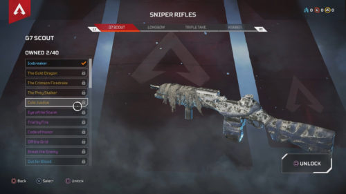
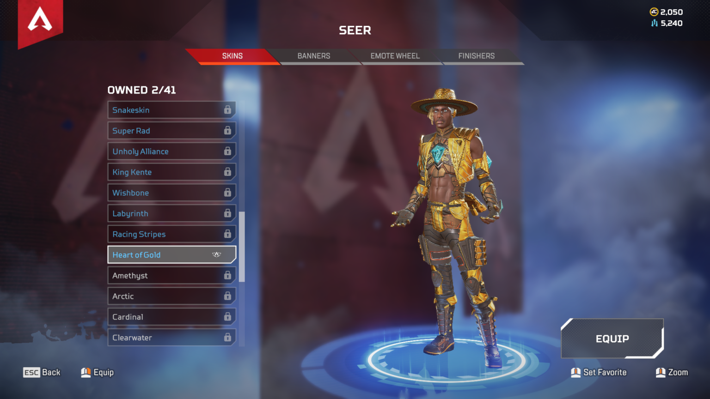

Apex legends has a store that is full of cosmetics that available to purchase with apex coins , which are also available to purchase.
The store updates there items weekly for all types of cosmetics to buy for your weapons, legend skins, banners, and charms.

THE BATTLE PASS is available to everybody who purchases it through the store. Within the battle pass you can play and earn rewards like skins, backgrounds, menu music, character skins and weapon charms doing challenges.

TO SEE WHAT KIND of skins you have for all your weapons , you can check your inventory in the weapons section to see what skins are available and what you can unlock using crafting materials.

YOU CAN ALSO see what kind of skins you have for the legends, that are also unlockable using craft materials. purchase comestics also appear here when you acquire stuff from the store.
